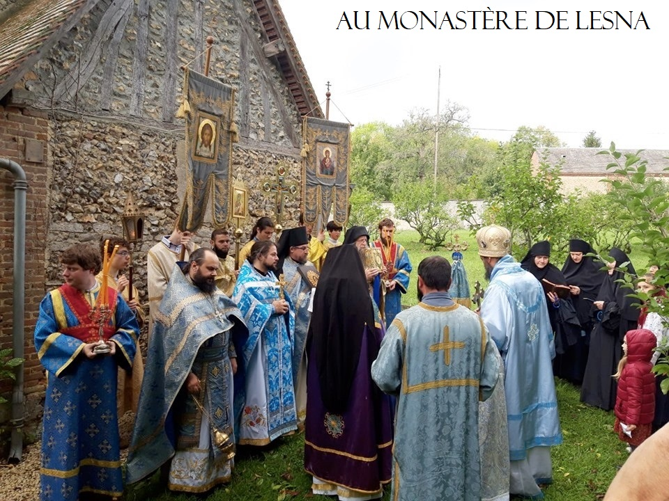

Paroisse Orthodoxe Sainte Clotilde
Voici les différentes vidéos de catéchèses :
Comment devenir Orthodoxe ?
La controverse du calendrier
Amour de la loi et loi de l'amour
Pourquoi j'ai rejoint l’Église Orthodoxe Russe Hors-Frontières (non ralliée à Moscou)(Laurent K.)
Le célibat ecclésiastique : un point de vue Orthodoxe
Où est l’Église orthodoxe canonique ?
Constantinople ou Moscou?
Deux nouveaux évêques pour la France?
